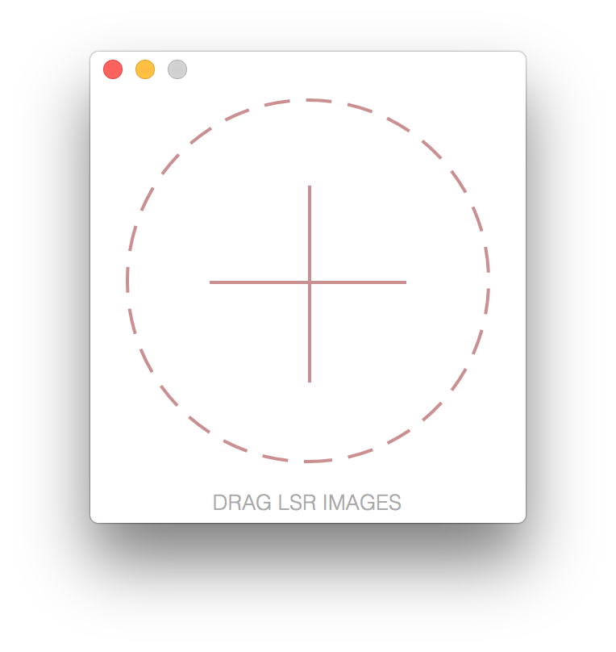

MORFOSI
A Simple Drag & Drop Solution for tvOS LSR to LCR Conversions.
About
Morfosi is an application that exists to alleviate the pains associated with converting tvOS LSR images to LCR images. Currently, LSR images must be converted to LCR images via the shell. This technique is suboptimal and can be very time consuming while trying to convert LSR images in batches. Morfosi solves this problem by presenting a simple Drag & Drop solution allowing you to convert hundreds of your precious images in seconds.
